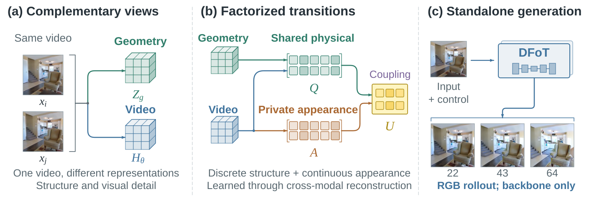
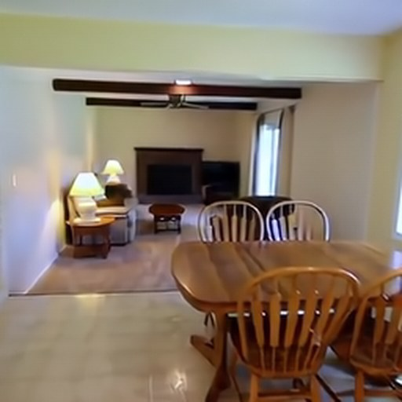
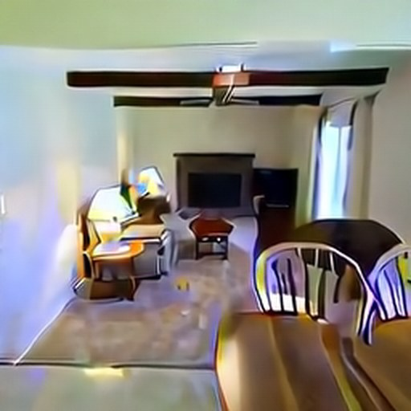
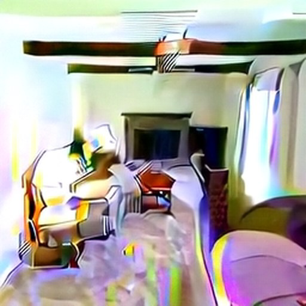
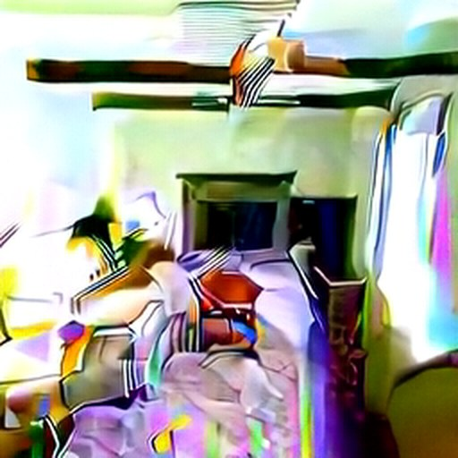
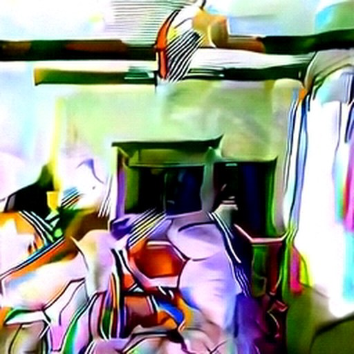

Anchor the physical
A geometry-anchored shared vocabulary organizes transitions seen by video and geometric representations.
Geometry-aware video world models
Learning factorized world transitions for geometry-aware video generation.
Shared physical structure. Private visual detail. One standalone video model.
01 / The idea
Geometry carries layout and correspondence; appearance retains the texture, illumination, and detail needed for a believable future. UPCAST learns both as complementary parts of a predictive transition.

A geometry-anchored shared vocabulary organizes transitions seen by video and geometric representations.
A continuous pathway preserves visual information that a geometric state alone cannot specify.
The learned corrections transfer into the original autoregressive backbone; auxiliary modules leave at inference.
02 / Video explorer
Synchronized camera-conditioned rollouts, from the same first frame and camera path.
03 / Factorized view
The physical pathway carries geometry-compatible structure. The private pathway retains complementary visual appearance, informed by frozen DINOv2 features. Coupling combines both for future visual reconstruction.
Image-space illustration using estimated depth and RGB; the learned states are latent, not per-pixel masks.
Complementary views of the same observations, removed before inference.
04 / Long-horizon generation
Our model is trained on 16-frame clips. Explore a 256-frame autoregressive rollout, then inspect how RGB fidelity changes over time across the paired evaluation cohort.

02
65
129
193
256PSNR from cohort-mean RGB error · conditioning frame excluded
05 / Geometry under domain shift
Zero-shot ARKitScenes probes how generated views hold up against sensor-referenced structure. The outcome is a balance, not a claim of uniform geometric superiority.
Depth uses the same frozen estimator and color scale for both generated videos.
12 matched 64-frame clips · zero-shot
Pose R@10 uses 10 cm / 10°. Depth and point-cloud recall improve; surface and pose results are mixed.
Inside the method
Factorized transition learning, a conditional teacher, and selective knowledge transfer are training-time mechanisms. At inference, only the original DFoT backbone remains.
06 / Main results
Camera-conditioned RealEstate10K evaluation. All methods share the same initial frame, camera trajectories, and sampling seeds.
| Method | FVD ↓ | FID ↓ | PSNR ↑ | JEDi ↓ | RPE ↓ |
|---|---|---|---|---|---|
| DFoT | 654.0 | 69.46 | 13.64 | 5.65 | 0.176 |
| REPA | 643.6 | 69.42 | 13.33 | 6.77 | 0.283 |
| VideoREPA | 795.4 | 76.09 | 11.48 | 9.98 | 0.282 |
| Geometry Forcing | 534.9 | 65.15 | 12.44 | 4.40 | 0.192 |
| UPCAST | 497.8 | 61.26 | 13.94 | 3.88 | 0.161 |
RPE uses the first 12 videos; other columns use all 100. Full protocols and additional results are in the paper.